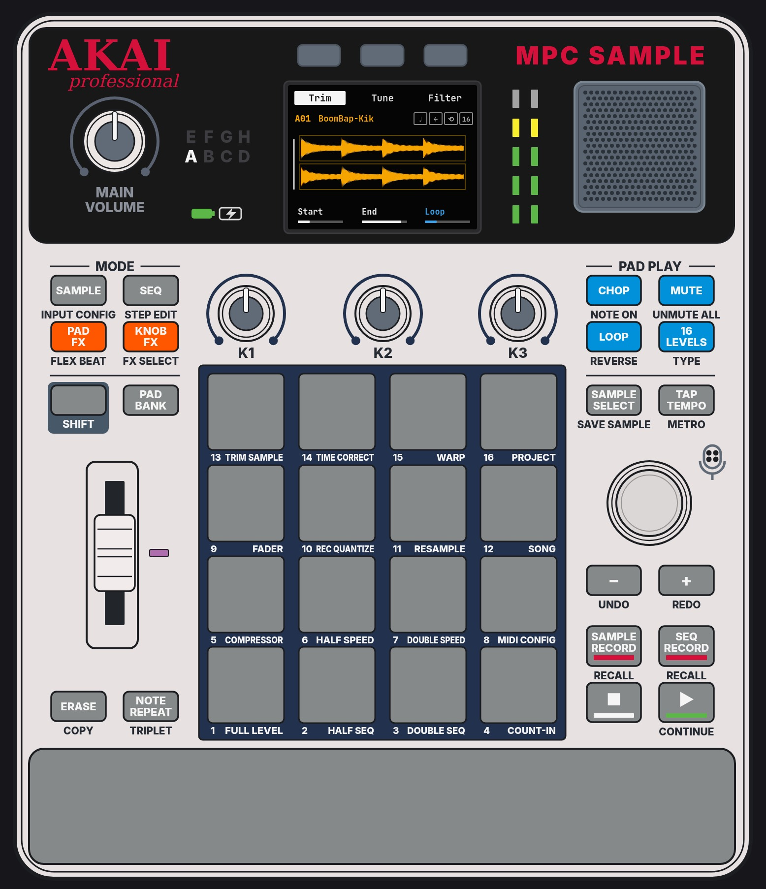
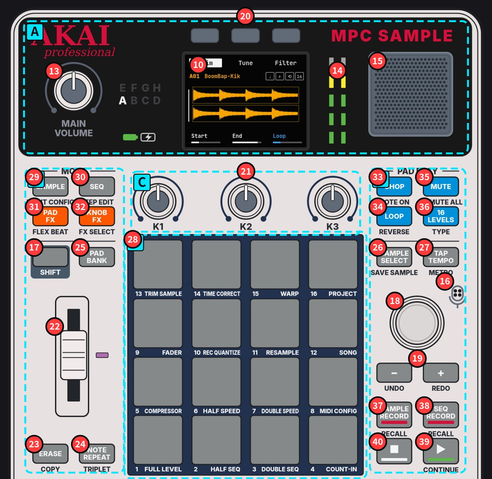

MPC Sample
硬件全图解 · 图文教程
无痛感受节奏
前言 · 作者导读
您好，我是本站的作者，大林。
我是一名音乐生。在家乡的时候，我很难找到音乐方面的一手资料，也接触不到我喜欢的街头文化和爵士文化，所以我选择了留学。后来阴差阳错，我进入了 IT 行业，做云服务。
这个网站是我一个人做的，用了 AI 等工具，从 2026 年 11 月开始，持续更新中。
我学做节奏的时候发现，中文资料很少。做这个网站，是想把基础的 Hip-hop 节奏乐理、MPC Sample 这台机器的用法和网页交互放在一起，温和地带你进入 Hip-hop 和采样的世界，也让喜欢音乐的人更容易接触到这些内容。
现在大家的时间都被短视频切碎了，很难集中精力做同一件事。我希望你能在这里慢下来，跟着机器和节奏，一点一点敲出自己的 beat。
欢迎你加入论坛交流，也欢迎用任何方式联系我。你的想法，或者合作，都可以。


零基础？ 从 第一章 功能介绍 开始：一步一个概念，图文 + 视频带你从开机做到第一段 beat。上面的 A–F 分区按钮通往 功能速查。
照片：你的机器。编号沿用官方手册 Features 章。11、12、14 为指示灯，照片中未亮，位置依官方线稿。⇧ = 按住 SHIFT。（网站上把鼠标停在红色编号上可看到控件名称。）
全书大纲
前言 导读：认识这个网站
- 无痛感受节奏——作者导读。
第一章 功能与界面介绍 · 功能介绍：从开机到第一段 beat
- 从开机到录出第一段 beat，一步一个概念。
第一章 功能与界面介绍 · 界面介绍：每个界面的每个旋钮与按键
- 每个界面的全部旋钮、按键与参数。
第一章附录 功能速查
- 规格、面板图解与全部屏幕参数，查表用。
第二章 乐理与鼓组：打击乐音色、使用场景、写 beat
- 鼓组构成、各鼓件的用法，与写 beat 的七个步骤。
第三章 采样
- 采样、编辑与节奏：录一个声音，切好、用好。
第四章 风格乐理
- Boom bap、Dilla 式、日系 jazzy、Memphis 等风格的律动与做法。
节奏网格实验室：看视频 → 在 MPC 上打出来（第二章 / 第四章 · 章内交互）
- 跟着网格视频，在机器上把经典节奏打出来。
第五章 术语表（英中 / 英日）
- 英中 / 英日三语术语对照。
第六章 论坛
- 交流区，暂未开放。
| 章节 | 内容 |
|---|---|
| 前言 导读：认识这个网站 | 作者导读 · 全站地图 |
| 第一章 功能与界面介绍 · 功能介绍：从开机到第一段 beat | 认识机器 · 开箱开机 · 面板 5 区（原创视频）· 认识小屏幕 · SHIFT · 打击垫与 Bank · 播放 demo · 换鼓声 · 序列 · 录 beat · 采样 · 效果 · 保存 · FAQ · 自查清单 |
| 第一章 功能与界面介绍 · 界面介绍：每个界面的每个旋钮与按键 | 编号 1–40 速查 · 各模式全部参数 · SHIFT 组合键速查卡 |
| 第一章附录 功能速查 | 规格 · 面板全图解（A–F，编号 1–40）· 16 垫 SHIFT 功能 · 灯光 · 全部屏幕/模式 · 五分钟上手 · 待确认 |
| 第二章 乐理与鼓组：打击乐音色、使用场景、写 beat | 鼓组构成 · 各鼓件声音与调法 · 使用场景 · 写 beat 七步 · 风格练习 |
| 第三章 采样 | 采样基础 · SAMPLE RECORD · 编辑 · 节奏 |
| 第四章 风格乐理 | Boom bap + DJ Premier 五法 · Dilla 式律动 · 日系 jazzy · Memphis · Lo-fi · Trap · Drill · House |
| 节奏网格实验室（第二章 / 第四章 · 章内交互） | 6 条原创网格视频 · 用出厂音色在 MPC Sample 上复刻 · 鼓网格 · 音名 → 16 LEVELS 垫位 · 和弦与人声替代方案 |
| 第五章 术语表（英中 / 英日） | 三语表，可切换英中、英日 |
| 第六章 论坛 | 注册（ID / 区域）· 会员付费方案 · 交流板块，暂未开放 |